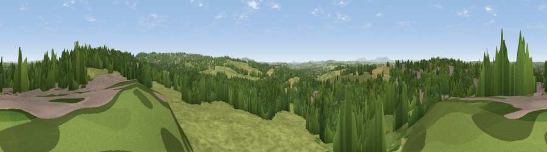

Viewpoint near Gospel End
#18725 in England · top 24% of its area beats it · near Gospel EndWhere it is
The exact computed spot (SO 88725 95125). Click the marker for map links.
The view, rendered

A 360° render of this exact spot computed from the terrain model, tree cover and land cover — summer colours, afternoon light, calibrated against photographs of famous viewpoints. Real trees, hedges and buildings will differ in detail.
The panorama
Grey silhouette: terrain skyline in each direction (720 bearings, Earth curvature and refraction included). Dashed green: skyline with trees (+15 m) and buildings (+8 m) as obstacles. Blue strip: how far the ground is visible on each bearing.
Where the view opens
Wedge length = distance to the farthest visible ground on that bearing (vegetation-aware). Rings at 10, 25 and 50 km.
What fills the view
40% grassland · 39% woodland · 15% built-up · 6% cropland
Angular shares of the visible panorama (visual magnitude), not map area. Landscape diversity 0.52 (0–1 Shannon).
Key numbers
More beautiful places nearby
The staircase of upgrades: each row has a higher view potential than everything closer. Driving times are estimates from straight-line distance, calibrated against real road routing — check an actual route before setting out.
| Place | Direction | Drive | Score |
|---|---|---|---|
| Viewpoint near Lower Penn | W · 1 km | ~4 min | 58.8 |
| Viewpoint near Gospel End | SE · 4 km | ~9 min | 62.3 |
| Viewpoint near Oakham | SE · 10 km | ~19 min | 67.8 |
| Viewpoint near Oakham | SE · 10 km | ~20 min | 68.2 |
| Viewpoint near Enville | SW · 12 km | ~23 min | 68.7 |
| Viewpoint near Enville | SW · 13 km | ~23 min | 73.1 |
| Viewpoint near Clent | SSE · 15 km | ~27 min | 73.8 |
| Viewpoint near Clent | SSE · 15 km | ~27 min | 74.3 |
52.55385, -2.16772 · source: screening · position refined by local search. Computed location — check access rights before visiting.